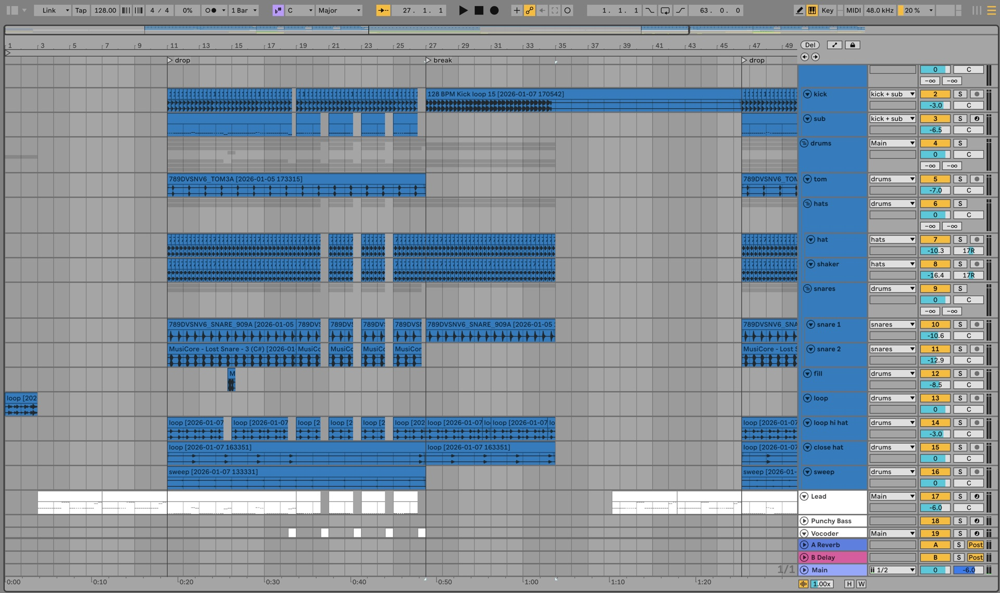

Caramelle
Mesto
Built from scratch by ear. Not stems and not a loop pack — the session file I work in.

128BPM
E♭ majKey
32Tracks in 8 groups
.alsLive project
What's inside
- 01The full arrangement. From the intro to the last bar, with the tracks named and grouped exactly as I keep them.
- 02Every rack and effect chain. Every device in order and with its settings. Switch one off and hear what it was doing.
- 03All the automation. Filters, sends and volumes, all in place — half the reason the track breathes.
- 04The MIDI for every part. Change the notes and it's yours.
What it's built with
33 % of the chains are devices Live already ships with. The rest are third-party plugins — and here's which, in case you don't have them.
You already have these · stock in Live
UtilityEQ EightDelayReverbCompressorGlue CompressorGateMultiband DynamicsAudio Effect Rack
Third-party
- FabFilter Pro-Q 3FabFilterTDR Nova · Ableton's EQ Eight
- Kickstart 2CableguysAbleton's Compressor with sidechain
- Serum 2XferVital
- DecapitatorSoundtoysAbleton's Saturator or Overdrive
- Valhalla VintageVerbValhallaValhalla Supermassive, from the same maker
- Endless SmileDada LifeNo free equivalent
- FabFilter Pro-Q 4FabFilterTDR Nova · Ableton's EQ Eight
- Ozone 12 Bass ControliZotopeNo free equivalent
- EchoBoySoundtoysAbleton's Echo
- NexusreFXIt's a ROMpler: there's no free equivalent
- Maserati GTiWavesNo free equivalent
- Sylenth1LennarDigitalSurge XT
- FabFilter Saturn 2FabFilterAbleton's Saturator
- SSL G-CompWavesAbleton's Glue Compressor
- FabFilter Pro-L 2FabFilterAbleton's Limiter
- FasterMasterMastering The MixAbleton's Limiter + EQ Eight
If you're missing one, the project still opens and Live just flags that device: the arrangement, the MIDI and the automation stay where they are.
The MIDI, freeChords and lead from this track, straight out of the session. No payment.
Download the MIDI ↗Watch the full breakdown on YouTube ↗
This is my own recreation, made by ear. It contains no audio, samples or material from the original release. You can publish whatever you make with it; you can't resell or redistribute the project file.